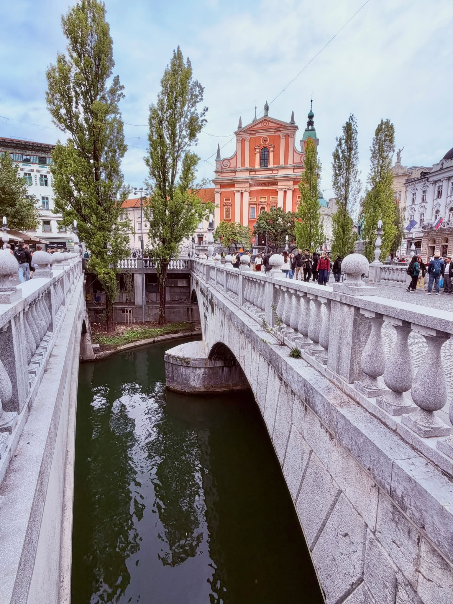

IVY'S PHOTO JOURNAL · LJUBLJANA
31 張照片，
一條城市散步。
旅途中，真正留下來的往往不是「抵達了哪裡」，而是市場攤上的光、橋邊奇異的雕像，以及抬頭時剛好遇見的一隻龍。
開始翻閱 ↓PHOTO ESSAY / 2026
「這不是景點清單，而是一次步行留下的視線。」
照片依空間與感受重新編排。部分註解說明可由官方資料確認的建築、橋梁與作品；其餘則忠實描述畫面，不替旅途補上不存在的故事。原始資料夾中的一組相同照片已排除，因此本頁收錄 31 張不重複影像。
FIELD NOTES / SOURCES
註解依據
照片為 Ivy 旅拍。建築、橋梁與交通資訊依官方資料整理；帶有感受性的文字是本頁的影像觀察。